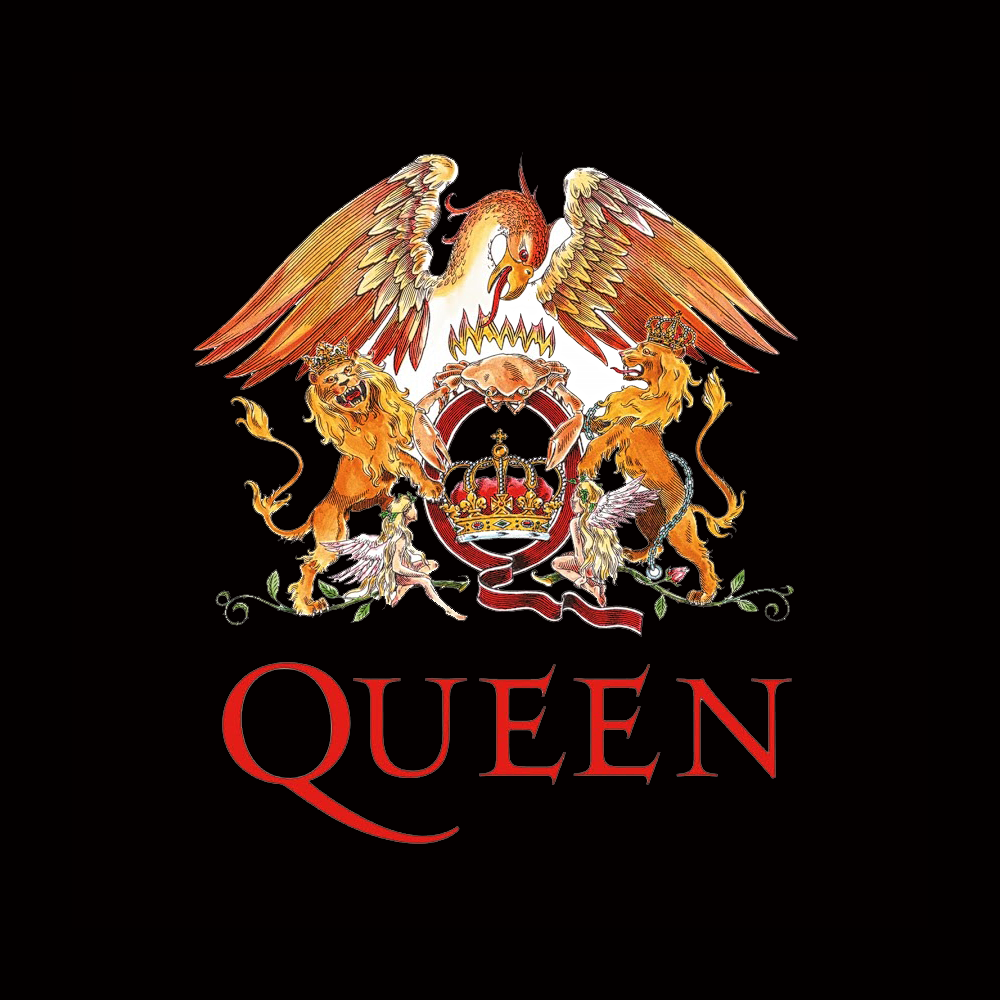

Фреди Меркьюри
Фре́дди Ме́ркьюри (англ. Freddie Mercury, урожд. Фарру́х Булса́ра;
5 сентября 1946, Каменный город, Занзибар — 24 ноября 1991, Лондон, Великобритания) —
британский певец парсийского происхождения, автор песен, вокалист рок-группы Queen.
Читать далее
Курт Кобейн
Курт До́нальд Кобе́йн (англ. Kurt Donald Cobain; 20 февраля 1967 — 5 апреля 1994)
— американский певец, автор песен, музыкант и художник, наиболее известный как вокалист
и гитарист рок-группы Nirvana.
Читать далее
Честер Беннингтон
Че́стер Чáрльз Бéннингтон (англ. Chester Charles Bennington;
род. 20 марта 1976, Финикс, Аризона, США — 20 июля 2017, Лос-Анджелес, Калифорния, США)
— американский рок-музыкант, вокалист групп Linkin Park и Dead by Sunrise.
Читать далее

Queen
Queen (Куи́н; в переводе с англ. — «королева») — британская рок-группа,
добившаяся широчайшей известности в середине 1970-х годов, и одна из наиболее успешных групп
в истории рок-музыки. Средства массовой информации называют группу «культовой» и пишут,
что она и по сей день имеет сотни миллионов поклонников[8].
Читать далее
Nirvana
Nirvana (МФА: [nɪɹˈvɑnə]) — американская рок-группа, созданная вокалистом и гитаристом
Куртом Кобейном и басистом Кристом Новоселичем в Абердине, штат Вашингтон, в 1987 году.
Читать далее

Linkin Park
Linkin Park — американская рок-группа, основанная в 1996 году под названием Xero
и исполняющая музыку преимущественно в стилях альтернативный метал,
ню-метал и рэп-метал (раннее творчество), альтернативный рок,
электроник-рок, поп и поп-рок (позднее творчество).
Читать далее